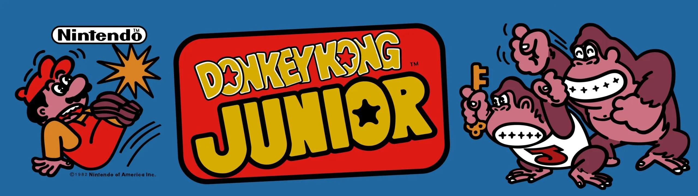

Game Changer
It wasn't until the late 1970s and early 1980s that Nintendo made its significant foray into electronic entertainment. Shigeru Miyamoto, a young and talented designer, created the iconic arcade game "Donkey Kong" in 1981, featuring characters like Mario (then known as Jumpman) and Donkey Kong himself. The game became a smash hit and marked the beginning of Nintendo's journey into video games.
Donkey Kong was innovative for its time. It featured multiple stages or screens, each with unique challenges and platforming elements. Players had to climb ladders, jump over barrels, and avoid hazards to reach Donkey Kong at the top and rescue Pauline. The game's dynamic and evolving gameplay set it apart from many other arcade titles of the era.
This was an instant hit in arcades. Its success helped Nintendo gain a strong foothold in the video game industry. The game's popularity extended beyond Japan and made its way to North America, where it captured the imaginations of players and contributed to the revival of the video game market after the North American video game crash of 1983.
Nintendo capitalized on the popularity of Donkey Kong by creating sequels and spin-offs. Notable among these was "Donkey Kong Jr.," released in 1982, where players took on the role of Donkey Kong's son to rescue his father. This further solidified the Donkey Kong franchise as a Nintendo staple.
